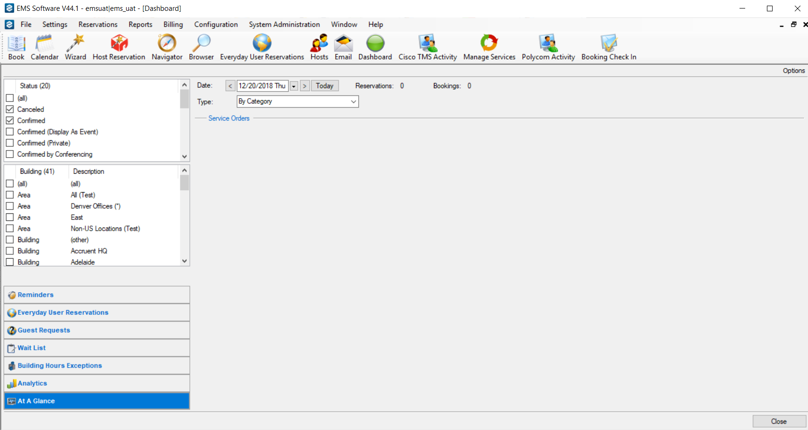

The At a Glance tab provides quick access to high-level booking statistics for events at your organization or facility. You can select to show booking statistics by category, by event type, by group type, by reservation source, by room type, or by status.

By default, when the tab first opens, the date is set to the current day’s date, and category is the selected display type.
To view booking statistics for your facility on a given date, complete these steps: